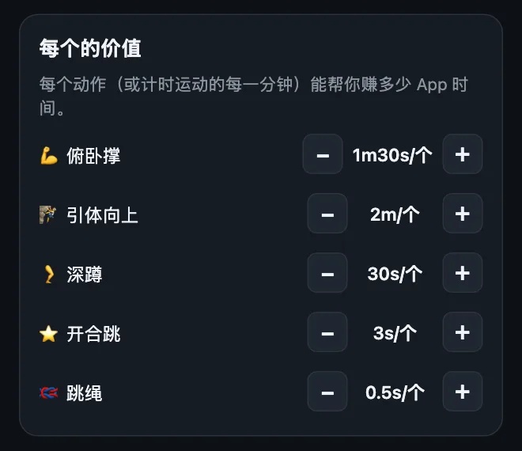

一个俯卧撑该换多少屏幕使用时间？
嗨大家好！在 HonorFit 里，你记录的每一个都能换 App 时间，而价格由你决定。这也是大家设置完之后最常问我的问题：一个俯卧撑该值多少？一分钟？十秒？下面是我的想法。
默认值
如果你什么都不动，就是这样：
| 运动项目 | 默认可赚 |
|---|---|
| 💪 俯卧撑 | 每一个 1 分钟 |
| 🧗 引体向上 | 每一个 1 分 30 秒 |
| 🔥 仰卧起坐、🦵 深蹲 | 每一个 30 秒 |
| 你自己添加的任何运动 | 每一个 30 秒 |
| 计时运动（走路、瑜伽、HIIT） | 每分钟 30 秒 |
| 距离运动 | 每公里 5 分钟，或每英里 8 分钟 |
| 👟 步数 | 每 1,000 步 3 分钟 |
所以 20 个俯卧撑就是 20 分钟的 Instagram。对很多人来说，一开始这样差不多刚好。但对有些人来说太大方，对有些人又太小气。你是哪一种？
一行就能算出来
想两个数字：
- 在一般的日子里，花多少时间在被屏蔽的 App 上你觉得 OK？要诚实，不是理想中的数字。
- 为了这些时间，你实际上愿意做几个，分散在一整天？
然后相除：每个的价值 = 时间 ÷ 次数。想用 60 个俯卧撑换一小时 TikTok？那就是每一个 1 分钟。一样想要一小时，但你做得了 120 个深蹲？那就是每个深蹲 30 秒。真的就这么简单。
如果第 2 题的答案是“没几个”，那也没关系。把每一个的价格订高一点，再用每日基本额度（在“设置”里，免费）让每天一开始就已经有一些时间存着。
几组可以直接照抄的设置
| 运动项目 | 每个可赚 | 一组可以换到 |
|---|---|---|
| 俯卧撑（新手） | 1 分 30 秒 | 10 个俯卧撑 = 15 分钟 |
| 俯卧撑（已经练一阵子了） | 30 秒 | 40 个俯卧撑 = 20 分钟 |
| 开合跳 | 3 秒 | 100 个开合跳 = 5 分钟 |
| 跳绳（每跳一下） | 0.5 秒 | 跳 600 个 = 5 分钟 |
| 引体向上 | 2 分钟 | 5 个引体向上 = 10 分钟 |
| 跑步（距离） | 每公里 6 分钟 | 跑 5 公里 = 30 分钟 |
规律是：一下越简单、越快，价值就应该越低。一个开合跳大概只要一秒，所以不该跟一个引体向上换到一样多。
1.18.0 的加减按钮变得更细了
之前最小值是 5 秒，所以超快的动作（跳绳、开合跳）很难定价，而从 3 分钟调到 10 分钟又要按到天荒地老。有位用户写信来讲了这两件事，所以在 1.18.0，−/+ 按钮会照一个更聪明的阶梯来跳：
- 5 秒以下：4、3、2、1 秒，然后是 0.5、0.25 和 0.1 秒。
- 5 秒到 1 分钟：每次 5 秒。
- 1 到 3 分钟：每次 15 秒。
- 3 到 10 分钟：每次 30 秒。
- 10 分钟以上：每次 1 分钟。
你可以在两个地方找到它们：
- 设置 → 每个的价值：每个运动项目一排 −/+。如果只是想微调价格，这里最快。
- 设置 → 运动项目 → 编辑：完整的编辑界面，你也可以在这里添加、改名和删除运动项目，并在次数、分钟和距离之间切换。完整说明在HonorFit 怎么自定义运动项目这篇里。

价格设错的征兆
- 你发现自己在记没做的次数。你的时间太贵了。这是诚信制在提醒你。把数值一次往上调一格，直到你不再有那种冲动。
- 你的余额永远用不完。你的时间太便宜了。把数值往下调一两格，或再多屏蔽一个 App。
- 你做完了，但心里很不爽。大概是运动选错了，不是价格错了。换一个你不讨厌的。走路也算，比较温和的动作也算。
- 你存了好几个小时，然后晚上一次全部花光。打开午夜重置（免费），没用完的时间就不会一直累积。
任何新设置，都先给它一周左右再改。不管怎么设，头几天都会怪怪的。
困难模式和病假模式
如果某些日子不适合你平常的设置，你可以在首页上方放一个 💀 困难模式按钮（设置 → 困难／病假模式，免费）。点一次，每一个只赚一半。再点一次是 🤒 病假模式，每一个赚两倍，给身体不舒服的时候用。再点一次就回到正常。你实际设置的数值永远不会变，所以没有什么要还原的。
我不是教练：我是做 App 的，不是健身教练。如果某个运动会痛，就停下来；如果你有受伤或健康状况，请问问了解你身体的人什么适合你，再依照那个来设置 HonorFit。
HonorFit Blocker 是 iPhone 和 Android 上的免费 App 屏蔽工具。运动项目和它们值多少时间，都由你决定。诚信制、不用摄像头，数据都不会离开你的手机。